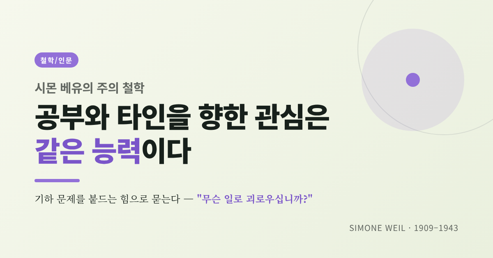
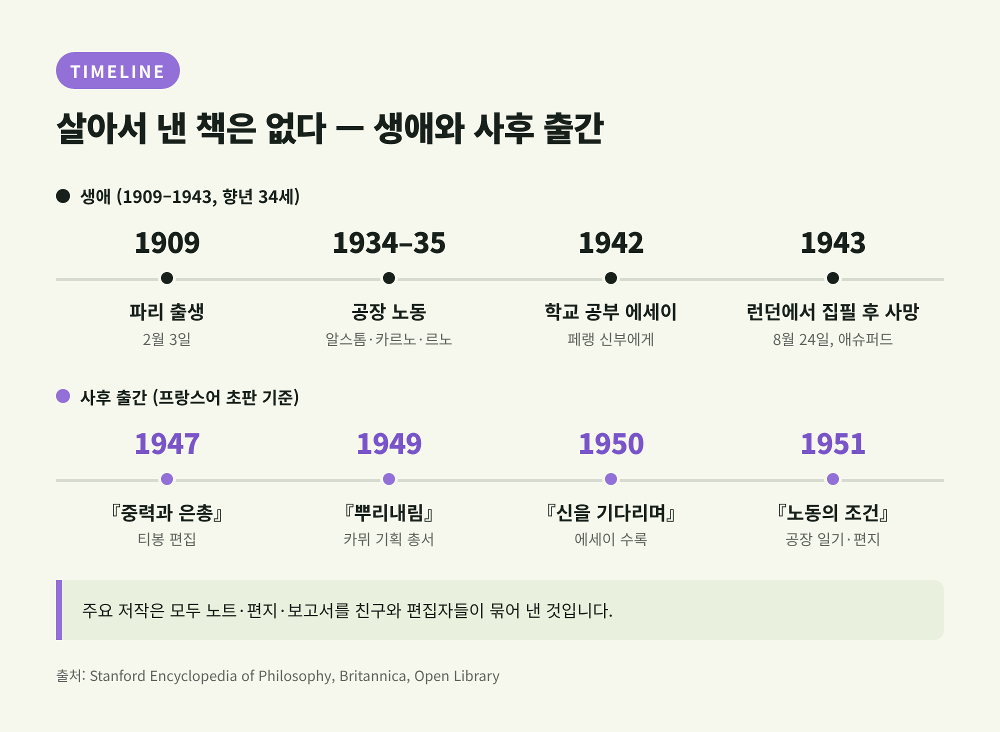
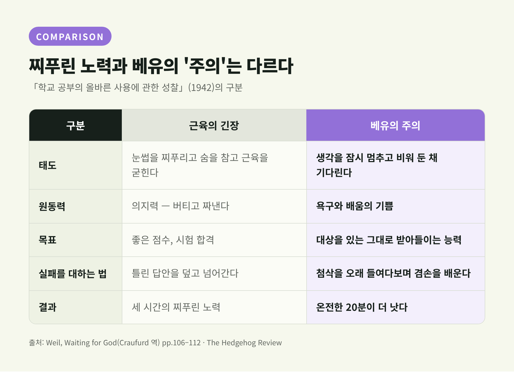
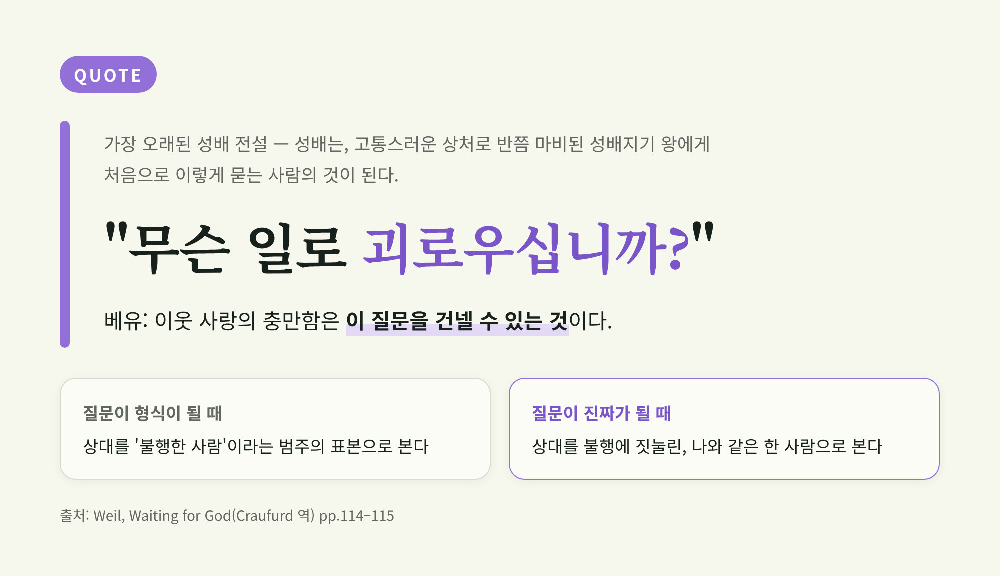
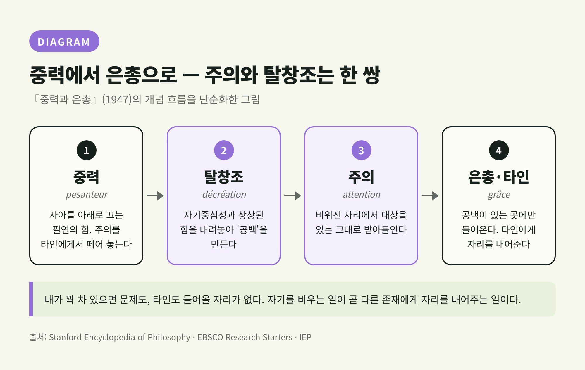
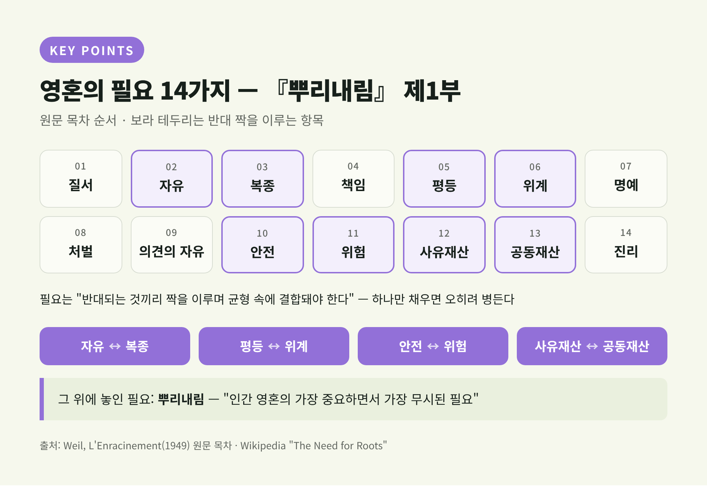
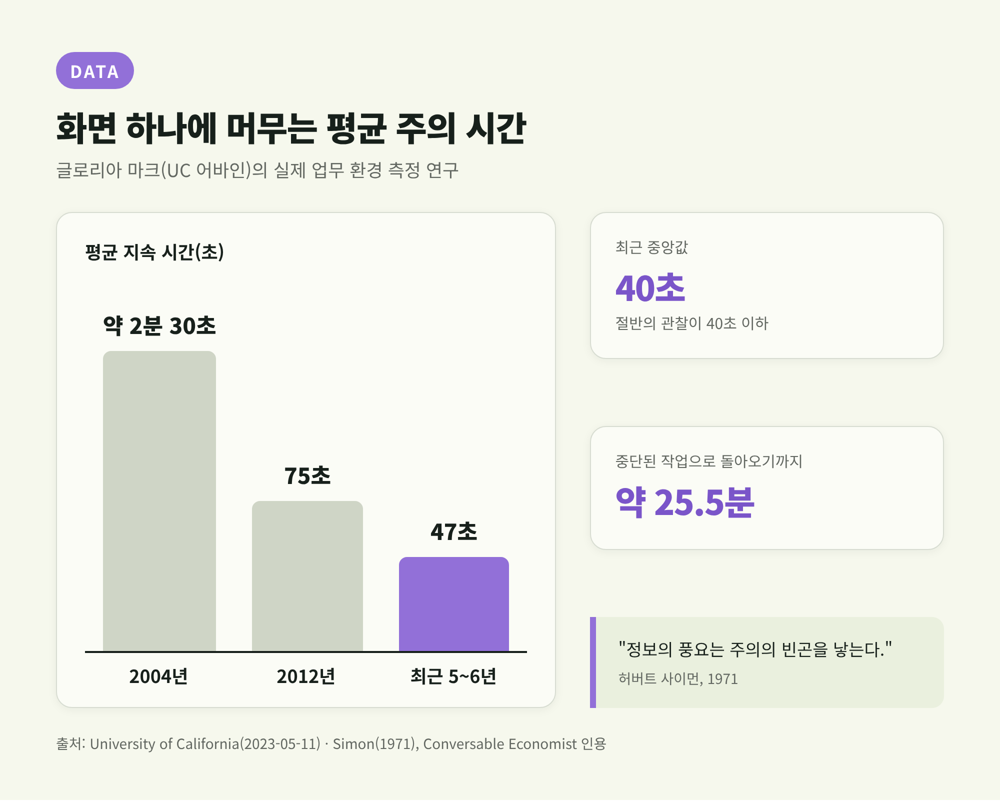

시몬 베유의 주의 철학, 공부가 타인을 향한 관심이 되는 이유

오늘은 프랑스 철학자 시몬 베유(Simone Weil, 1909~1943)의 '주의(attention)' 철학을 정리해 보려 합니다. 기하 문제를 붙드는 힘과 아픈 사람에게 "무슨 일로 괴로우십니까"라고 묻는 힘이 같은 능력이라는 주장입니다. 먼저 핵심부터 말씀드리면 이렇습니다.
- 베유에게 주의란 애써 힘주는 집중이 아니라, 생각을 잠시 비워 두고 대상이 들어오기를 기다리는 상태입니다.
- 학교 공부의 진짜 쓸모는 점수가 아니라 이 주의력을 기르는 데 있다고 보았습니다.
- 그렇게 길러진 주의는 고통받는 사람을 '사례'가 아닌 한 사람으로 보게 합니다. 스마트폰이 주의를 상품으로 사고파는 지금, 이 생각은 다시 읽힐 만합니다.
■ 서른넷에 떠난 철학자, 책은 모두 죽은 뒤에 나왔다
시몬 베유는 1909년 2월 3일 파리에서 태어났습니다. 유대계였지만 종교색이 옅은, 세속적인 중산층 가정이었습니다. 오빠는 이름난 수학자 앙드레 베유입니다. 철학자 알랭에게 배웠고, 1928년 고등사범학교에 들어갔습니다. 교수자격을 얻은 뒤 1931년 말부터 리세(고등학교)에서 철학을 가르쳤습니다.
그의 삶은 짧고 굴곡이 많았습니다. 1934년 말부터 공장 노동자로 일했고, 1936년에는 스페인 내전에 뛰어들었다가 끓는 기름에 화상을 입고 돌아왔습니다. 1940년 파리를 떠나 마르세유에서 레지스탕스 활동을 했고, 1942년 뉴욕을 거쳐 런던의 자유프랑스 진영에 합류했습니다. 그리고 1943년 8월 24일, 영국 애슈퍼드의 요양원에서 서른넷의 나이로 세상을 떠났습니다.
사인은 결핵과 영양실조였습니다. 점령당한 프랑스 사람들이 받는 배급량 이상은 먹지 않겠다고 고집했다는 사정이 전해집니다. 검시관은 자살로 판정했지만, 전기작가 페트르망처럼 이 판정에 동의하지 않는 이도 있습니다.
눈여겨볼 점은 그의 주요 저작이 모두 사후에 나왔다는 사실입니다. 살아서 그는 책 한 권을 내지 않았습니다. 노트와 편지, 보고서를 친구와 편집자들이 묶어 냈습니다.

- 『중력과 은총』(1947): 1942년 초 베유가 맡겨 둔 노트 여러 권을 귀스타브 티봉이 골라 38개 장으로 엮은 책입니다.
- 『뿌리내림』(1949): 1943년 초 런던에서 자유프랑스를 위해 쓴 보고서입니다. 알베르 카뮈가 갈리마르 출판사의 '에스푸아르' 총서로 펴냈습니다.
- 『신을 기다리며』(1950): 페랭 신부에게 보낸 편지와 글을 모은 책입니다. 이번 글의 중심인 학교 공부 에세이가 여기에 실렸습니다.
- 『노동의 조건』(1951): 공장 일기와 편지를 묶었습니다.
이 때문에 베유의 사상은 완성된 체계라기보다, 여러 갈래의 단상이 서로를 비추는 모양으로 읽힙니다.
■ 학교 공부는 '주의'를 기르는 훈련이다
1942년, 베유는 도미니코회 사제 조제프마리 페랭 신부에게 짧은 글 한 편을 보냅니다. 미국으로 가던 길, 카사블랑카에서였습니다. 페랭 신부가 몽펠리에의 가톨릭 학생들을 지도하고 있었기에, 그들을 위해 쓴 글입니다. 제목이 꽤 깁니다. 「신에 대한 사랑을 위한 학교 공부의 올바른 사용에 관한 성찰」. 분량은 3,400단어 남짓입니다.
글은 "기도는 주의로 이루어진다"는 문장으로 시작합니다. 신앙의 언어로 쓰였지만, 주장의 뼈대는 교육론에 가깝습니다. 공부의 일차적 가치는 지식 그 자체보다 주의를 기울이는 능력을 기르는 데 있다는 것입니다.
그래서 베유는 과목을 가리지 말라고 합니다. 수학을 좋아하든 라틴어를 싫어하든, 모든 과목이 같은 능력을 길러 주기 때문입니다. 기하 문제 하나를 한 시간 붙들고도 끝내 못 풀었다고 해 봅시다. 베유는 그 시간이 헛되지 않았다고 말합니다. "또 다른, 더 신비로운 차원"에서 진전이 있었다는 것입니다. 그 효과는 엉뚱한 곳에서 나타날 수도 있습니다. 그는 훗날 라신의 시를 읽는 감각이 달라질 수 있다는 예를 듭니다.
"진정한 주의의 노력은 결코 헛되지 않다." — 「학교 공부의 올바른 사용에 관한 성찰」(영역본 p.106)
여기서 오해 하나를 짚어야 합니다. 베유가 말하는 주의는 이를 악문 집중이 아닙니다. 그는 학생들이 공부할 때 "눈썹을 찌푸리고, 숨을 참고, 근육을 굳히는" 모습을 묘사하며, 그것은 주의가 아니라고 잘라 말합니다. 근육의 긴장은 아무리 선의라도 열매를 맺지 못한다는 것입니다. 의지력은 공부에서 거의 역할을 하지 못하고, 지성을 이끄는 것은 의지가 아니라 욕구라고 보았습니다. 그래서 "배움의 기쁨은 달리기에 숨이 필요하듯 공부에 꼭 필요하다"고 썼습니다.

그렇다면 주의란 무엇일까요. 베유의 정의는 이렇습니다. 주의는 생각을 잠시 멈추고, 매이지 않은 채 비워 두어, 대상이 스며들 수 있게 준비하는 것입니다. 스탠퍼드 철학 백과사전은 이를 수용적인 '부정적 노력(negative effort)'이라고 요약합니다. 무언가를 해내는 행위라기보다, 자기 기획을 멈추고 돌아서는 일에 가깝다는 뜻입니다. 글쓰기를 예로 들면, 맞는 단어를 억지로 짜내지 않고 기다리며, 맞지 않는 단어를 하나씩 물리치는 일입니다.
몇 가지 실천 지침도 덧붙였습니다.
- 좋은 점수나 시험 합격을 목표로 삼지 않습니다. 그래도 과제 하나하나를 제대로 해내려는 마음은 놓지 않습니다.
- 틀린 답안과 첨삭을 피하지 말고 오래 들여다봅니다. 자신의 어리석음을 응시하는 일이 겸손을 기른다고 보았습니다.
- 찌푸린 세 시간보다, 온전한 20분의 주의가 낫다고 했습니다.
예전엔 공부를 '시험을 위한 준비'로만 여겼다면, 베유의 관점에서 공부는 '세계를 받아들이는 자세를 익히는 연습'이 되는 셈입니다.
■ "무슨 일로 괴로우십니까" — 같은 능력이 타인을 향할 때
이 에세이의 진짜 무게는 끝부분에 있습니다. 베유는 공부로 길러진 주의가 결국 고통받는 이웃을 향한다고 말합니다.
그는 중세 성배(聖杯) 전설을 꺼냅니다. 가장 오래된 이야기에서 성배는, 고통스러운 상처로 몸이 반쯤 마비된 성배지기 왕에게 처음으로 이렇게 묻는 사람의 것이 됩니다. "무슨 일로 괴로우십니까?"

베유는 이웃 사랑의 충만함이 바로 이 질문을 건넬 수 있는 데 있다고 썼습니다. 이 질문은 쉬워 보이지만 그렇지 않습니다. 고통받는 사람을 '불행한 사람'이라는 사회적 범주의 표본으로 보는 순간, 질문은 형식이 됩니다. 그를 우리와 똑같은, 그러나 불행에 짓눌린 한 사람으로 보아야 비로소 진짜 질문이 됩니다.
그래서 베유는 고통받는 사람에게 주의를 기울이는 능력이 "거의 기적"에 가까울 만큼 드물다고 했습니다. 그런 능력이 있다고 믿는 사람 대부분은 실제로 갖고 있지 않다고도 덧붙입니다. 따뜻한 마음, 충동적 선의, 연민만으로는 부족하다는 것입니다.
같은 해인 1942년, 베유는 전쟁 부상으로 병상에 있던 시인 조에 부스케에게 보낸 편지에서 이렇게 씁니다. "주의는 가장 드물고 가장 순수한 형태의 관대함이다." 흔히 『중력과 은총』이나 학교 공부 에세이의 구절로 소개되지만, 확인되는 출처는 1942년 4월 13일 자 이 편지입니다.
이 대목에서 기하 문제와 이웃이 이어집니다. 답이 나올 때까지 자기 생각을 덧씌우지 않고 문제를 그대로 바라보는 힘. 상대가 말할 때까지 자기 해석을 내려놓고 그 사람을 그대로 바라보는 힘. 베유에게 둘은 같은 근육, 아니 근육이 아닌 같은 '비움'입니다.
■ 불행(malheur), 공장에서 배운 단어
베유가 말하는 '불행(malheur)'은 단순한 고통과 다릅니다. 스탠퍼드 철학 백과사전은 이를 신체적 고통, 심리적 고뇌, 사회적 전락이 한데 얽힌 상태로 설명합니다. 훗날 영적 고통이 하나 더 더해집니다. 인터넷 철학 백과사전의 표현을 빌리면, 불행은 사람에게서 존엄을 빼앗고 그를 뿌리째 뽑아내며 영혼에 "노예의 표식"을 남깁니다.
이 개념은 책상에서 나오지 않았습니다. 베유는 1934년 6월 교직 휴직을 신청하고, 그해 12월 4일 화요일 알스톰 공장에 미숙련 노동자로 들어갔습니다. 공장 일기의 첫 줄이 이 날짜입니다. 지하철·전차 설비를 만들던 알스톰을 거쳐 카르노 공장, 그리고 1935년 여름 르노 공장에서 일했습니다. 실제 노동 기간은 자료에 따라 약 24주, 혹은 거의 6개월로 기록됩니다.
임금은 성과급이었습니다. 할당된 시간 안에 정해진 개수를 맞춰야 했고, 베유는 자주 실패했습니다. 제자에게 보낸 편지에서 그는 일이 너무 기계적이라 생각할 거리를 주지 않으며, 다른 모든 생각을 금지한다고 썼습니다. 작업 속도는 "생각보다 빨랐고", 피로는 사람을 멍하게 만드는 데까지 이르렀습니다. 공장 일기에는 이런 문장도 남아 있습니다. "핵심은 고통이 아니라 굴욕이다."
스탠퍼드 철학 백과사전은 이 경험에서 '굴욕'과 '억압'이라는 말이 점차 '불행'이라는 개념으로 자라났다고 봅니다. 흥미로운 연결이 여기서 생깁니다. 공장은 바로 주의가 불가능한 노동 조건이었습니다. 사유보다 빠른 속도가 사람을 생각 없는 손으로 만들었습니다. 베유가 주의를 그토록 귀하게 여긴 데에는, 주의를 빼앗긴 상태를 몸으로 겪은 기억이 깔려 있다고 읽을 수 있습니다.
물론 한계를 지적하는 목소리도 있습니다. 컬럼비아대 버나드 하코트는 베유의 공장 체험이 노동자의 자율·교육·존중 같은 개혁 제안으로 이어졌지만, 소유 구조 같은 근본 문제로는 나아가지 못했다고 평가합니다. 노동자의 감정에 가까이 다가간 것이 오히려 더 큰 경제 구조를 흐리게 했을 수 있다는 물음도 던집니다.
■ 중력과 은총, 그리고 탈창조
공책 단상을 모은 『중력과 은총』의 첫 장 제목이 곧 책 제목입니다. 여기서 베유는 영혼의 움직임을 물리학의 언어로 설명합니다.
- 중력(pesanteur): 사람을 아래로 끌어내리는 필연의 힘입니다. 몸과 마음, 사회적 위치까지 우리를 종속시키고, 주의를 신과 고통받는 이에게서 떼어 놓습니다. 오르려 해도 다시 끌어내리는 힘입니다.
- 은총(grâce): 이 필연을 꿰뚫는 유일한 예외로 묘사됩니다. 은총은 '공백(void)'이 있는 곳에만 들어오며, 그 공백을 만드는 것도 은총이라고 그는 보았습니다.
- 탈창조(décréation): 자아중심성, 스스로를 세계의 중심으로 여기는 착각, 상상된 힘을 내려놓는 일입니다. 『중력과 은총』 해설은 이를 "창조된 것을 창조되지 않은 것으로 넘어가게 하는 것"으로 요약합니다.

종교 사상사의 맥락에서 보면, 베유는 신이 세계를 창조하며 스스로 '물러났다'고 보았고, 인간이 이 물러남을 본뜨는 것을 탈창조라 불렀습니다. 스탠퍼드 철학 백과사전은 이 개념이 인식(상상에 의한 왜곡을 줄이는 것), 윤리(주의), 미학(아름다움과의 접촉)에 고루 걸쳐 있다고 설명합니다.
이렇게 놓고 보면 주의와 탈창조는 한 쌍입니다. 내가 꽉 차 있으면 문제도, 타인도 들어올 자리가 없습니다. 자기를 비우는 일이 곧 다른 존재에게 자리를 내어주는 일입니다. 신앙의 언어를 걷어내도 남는 통찰이 있습니다. 상대를 보기 전에 이미 내 판단으로 그 사람을 채워 버리는 습관, 그것이 베유가 말한 '중력'에 가장 가까운 일상의 모습일 것입니다.
■ 『뿌리내림』의 영혼의 필요 14가지
주의가 개인의 태도라면, 『뿌리내림』은 그것을 사회의 언어로 옮긴 작업입니다. 책의 첫 문장은 "의무의 개념이 권리의 개념에 앞선다"입니다. 권리는 다른 사람이 의무를 다할 때만 의미가 있고, 우주에 혼자 있는 사람에게는 의무만 있을 뿐 권리는 없다는 논리입니다. 베유는 각 필요에는 그에 대응하는 의무가 있다고 보았습니다.
제1부 '영혼의 필요(besoins de l'âme)'는 열네 가지 항목을 차례로 다룹니다.

| 순서 | 영혼의 필요 | 순서 | 영혼의 필요 |
|---|---|---|---|
| 1 | 질서 | 8 | 처벌 |
| 2 | 자유 | 9 | 의견의 자유 |
| 3 | 복종 | 10 | 안전 |
| 4 | 책임 | 11 | 위험 |
| 5 | 평등 | 12 | 사유재산 |
| 6 | 위계 | 13 | 공동재산 |
| 7 | 명예 | 14 | 진리 |
목록에서 눈에 띄는 것은 서로 반대되는 항목이 나란히 있다는 점입니다. 베유는 필요들이 "반대되는 것끼리 짝을 이루며 균형 속에 결합돼야 한다"고 썼습니다. 자유와 복종, 평등과 위계, 안전과 위험이 그렇습니다. 하나만 채우면 사람은 오히려 병듭니다.
그리고 그 위에 가장 중요한 필요를 놓습니다. "뿌리내림은 아마도 인간 영혼의 가장 중요하면서 가장 무시된 필요"라는 것입니다. 그가 보기에 뿌리가 가장 심하게 뽑힌 이들은 도시의 저임금 공장 노동자였습니다. 제자리에 살면서도 돈에 전적으로 매달린 조건 탓에 공동체로부터 떨어져 나간 사람들입니다. 실업은 그에게 "뿌리 뽑힘의 제곱"이었습니다.
공장 일기의 굴욕, 학교 공부 에세이의 주의, 『뿌리내림』의 필요 목록은 이렇게 한 줄로 이어집니다. 사람에게 무엇이 필요한지 알아보려면, 먼저 그 사람에게 주의를 기울여야 합니다. 필요 목록은 그 주의가 사회적 규모로 확장된 결과라고 볼 수 있습니다.
■ 스마트폰 시대에 베유를 다시 읽는다면
1971년, 경제학자 허버트 사이먼은 이렇게 썼습니다. "정보가 소비하는 것은 분명하다. 그것은 받는 이의 주의를 소비한다." 그래서 정보의 풍요는 주의의 빈곤을 낳는다고 했습니다. 오늘날 '주의력 경제'라는 말의 뿌리로 자주 인용되는 문장입니다.
수치도 이를 뒷받침합니다. UC 어바인의 심리학자 글로리아 마크는 실제 업무 환경에서 사람들이 화면 하나에 머무는 시간을 측정해 왔습니다.

- 2004년: 평균 약 2분 30초
- 2012년: 평균 75초
- 최근 5~6년: 평균 47초, 중앙값 40초
- 중단된 작업으로 돌아오기까지: 평균 약 25.5분
철학 연구자 캐스린 로슨은 2026년 3월 IAI 뉴스 기고에서 베유를 빌려 이 상황을 진단했습니다. 플랫폼이 체류 시간으로 돈을 벌기 시작하면서 사용자의 주의 자체가 상품이 되었고, 알고리즘이 만들어 내는 것은 진짜 주의를 흉내 낸 '대용품' 주의라는 것입니다.
베유의 눈으로 보면 문제는 단순히 시간을 빼앗기는 것이 아닙니다. 피드를 넘기는 동안 우리는 늘 무언가로 가득 차 있습니다. 비어 있을 틈이 없으니, 문제도 타인도 들어올 자리가 없습니다. 공부할 때의 산만함과, 곁에 있는 사람의 말을 흘려듣는 습관이 같은 뿌리를 가진다는 것. 베유의 주의 철학이 지금 다시 읽히는 이유가 여기 있을 것입니다.
다만 조심할 점도 있습니다. 베유는 디지털 기술을 본 적이 없습니다. 그의 생각을 스마트폰 문제에 잇는 것은 어디까지나 해석입니다. 또 그의 주의는 신을 향한 기다림이라는 종교적 틀 안에서 나왔습니다. 철학자 아이리스 머독은 1970년 『선의 군림』에서 이 단어를 빌려 와 "개별적 실재를 향한 정의롭고 사랑 어린 시선"으로 다시 정의했습니다. 종교적 틀을 덜어낸 채 더 능동적인 활동으로 바꾼 것입니다. 베유를 오늘 읽는 한 가지 방법을 보여 주는 셈입니다.
베유가 주는 처방은 의외로 '더 독하게 참아라'가 아닙니다. 그는 찌푸린 의지력을 경계했고, 기쁨과 욕구가 주의를 이끈다고 보았습니다. 알림을 끄는 것만으로는 부족하고, 비워진 자리에 무엇을 맞이할지가 더 중요하다는 뜻으로 읽힙니다.
정리하면 이렇습니다. 베유에게 공부는 점수를 위한 경쟁이 아니라, 자기 생각을 잠시 내려놓고 대상을 있는 그대로 받아들이는 연습이었습니다. 그리고 그 연습은 결국 한 사람 앞에 서는 순간을 위한 것이었습니다.
"주의는 가장 드물고 가장 순수한 형태의 관대함이다."
오늘 하루 누군가에게 휴대전화를 내려놓고 그 질문을 건넬 수 있는지 물으신다면, 그것이 베유가 말한 공부의 마지막 과제라고 답하겠습니다.
참고자료
- Stanford Encyclopedia of Philosophy, "Simone Weil" (2025 개정)
- Internet Encyclopedia of Philosophy, "Simone Weil (1909—1943)"
- Encyclopaedia Britannica, "Simone Weil"
- W. John Morgan, "Simone Weil's 'Reflections on the Right Use of School Studies…': A Comment", RUDN Journal of Philosophy (2020)
- Simone Weil, "Reflections on the Right Use of School Studies…", Waiting for God (Craufurd 역)
- Simone Weil, L'Enracinement (원문)
- Simone Weil, La Condition ouvrière (Bard College 아카이브)
- Wikipedia, "The Need for Roots"
- Open Library, Attente de Dieu 판본 목록
- EBSCO Research Starters, "Gravity and Grace by Simone Weil"
- EBSCO Research Starters, "Factory Journal by Simone Weil"
- Bernard E. Harcourt, "Factory Work: Simone Weil & Immersive Philosophical Praxis" (2023)
- Stanford Encyclopedia of Philosophy, "Iris Murdoch"
- Kathleen Fitzpatrick, "La plus rare et la plus pure" (부스케 편지 출처 확인)
- Conversable Economist, Herbert Simon(1971) 인용 해설
- University of California, "Can't pay attention? You're not alone" (2023)
- Kathryn Lawson, "Simone Weil, the attention economy, and the annihilation of autonomy", IAI News (2026)
- The Hedgehog Review, "Simone Weil Against Distraction"